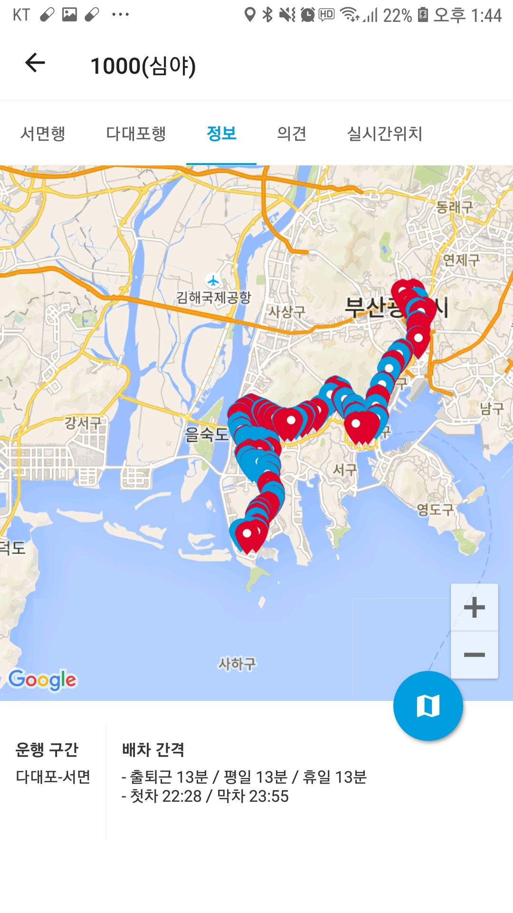
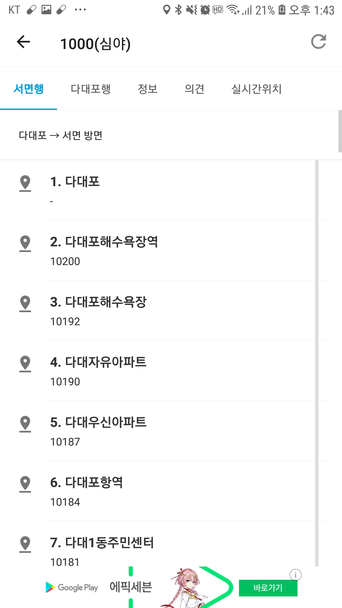

많은 사람들이 대중교통을 사용하고 있다.
특히나 자가용이 없거나 태깃를 타는 사람들보다는 더 자주 이용하는 것이 대중교통입니다.
이러한 밀접한 대중교통을 하고 있어서 더욱 편리하세 사용할수 있는 방법이 없을 까 생각이든다.
부산버스(어플)
부산에 있는 모든 버스 정류장의 위치를 구글 GPS을 통해 연동하여 보여주고 있습니다.
내가 원하는 버스노선에 대해서 버스간격과 버스 정류장에서 버스오는 사이의 간격의 도착기간을 미리 알려줍니다.

버스간격노선도(어플)
부산에 있는 모든 버스 정류장의 위치를 구글 GPS을 통해 연동하여 보여주고 있습니다.
내가 원하는 버스노선에 대해서 버스간격과 버스 정류장에서 버스오는 사이의 간격의 도착기간을 미리 알려줍니다.

실시간의 정보가 아님에 따라서 몇 분 사이에 오차가 발생한다.
예를 들어 출퇴근 시간에 따라 다급할 경우 1 정거장 차이에는 지각이라는 불편한 점이 발생한다.
버스 정류장에서도 출 퇴근 시간에 몇분에 오차가 발생하는 경우 지각이라는 단점이 생긴다.